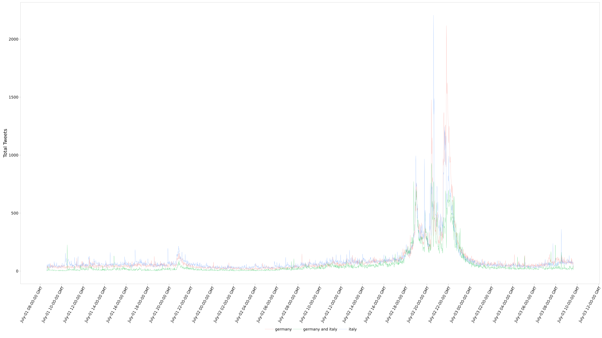

Introduction
Soccer is one of the most popular sports played and/or watched globally. The 2016 FIFA Euro Cup is a major soccer sporting event which occurs every 4 years. The Quarter-Final is the beginning of the knockout stages, where teams are eliminated from single-leg matches. Germany is the world-cup champions and is one of the favoured teams to win the cup. However, Italy has not lost to Germany in a competitive match previously. Thus, the 2016 Euro Quarter-Final match played at the Stade de Bordeaux, Bordeaux, France was one the of most anticipated sporting events. Twitter is a popular social media platform, which allows individuals to express thoughts or ideas on the internet, and these so called “tweets” can be viewed by others. The advent of social media has allowed for the systematic documentation of peoples’ thoughts around the world.
Objective
To describe the behaviour of tweets about Germany and Italy before, during, and after the 2016 Euro Quarter-Final match.
Rationale
Twitter arguably has the potential to describe the global human thought psyche regarding major sporting events such as the Euro 2016. Since the Quarter-finals match is a highly anticipated major sporting event, there may be a large surge of tweets containing the terms “Germany” and “Italy” around the event time period.
Methods
The Tweepy python library was used to access and mine tweets from the Twitter Streaming API. Tweets containing the terms ‘germany’ and/or ‘italy’ were collected from 01-July-2016 08:00 GMT to 03-July-2016 09:00 GMT. The resultant JSON formatted text file was parsed for time stamps and whether tweets were only “germany”, only “italy, or both. R and the ggplot2 package was used to visualize these time stamps over 2 hour intervals in a graph.
Hypothesis
The number of tweets may reflect the hype (before), the highlight moments (during), and the lingering excitement (after) for each country’s team.
Results
Figure 1. shows the total number of tweet per minute. There were a total of 7 identifiable peak moments with high number of tweets:
- Peak at Jul 01, 10:00 GMT: Unrelated news
- Peak at Jul 01, 21:00 GMT: Germany/Italy predictions for EURO2016 Finals
- Peak at Jul 02, 18:58 GMT: Anthems and commencement of game
- Peak at Jul 02, 20:25 GMT: Ozil scores for Germany
- Peak at Jul 02, 20:38 GMT: Penalty Shootout
- Peak at Jul 02, 21:49-22:00 GMT: Game finishes with Germany emerging as winner; congratulatory comments to Italy
- Peak at Jul 03, 08:30 GMT Italian Coach Antonio Conte announcement
There were notably more tweets using the keywords “#italy, Italy” than “#germany, germany”.